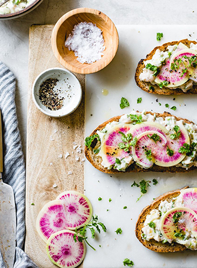
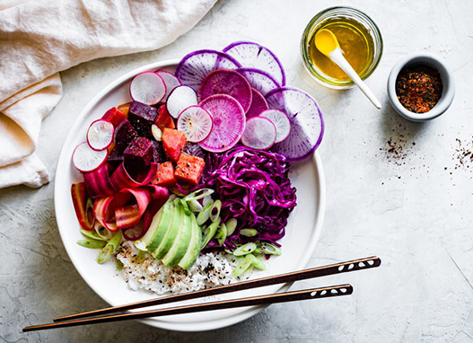

Редис — это кладовая минералов и витаминов. Он обладает
уникальным составом витаминов, полезных элементов и аминокислот.
В пищу обычно употребляют корнеплоды, которые имеют диаметр
от 2,5 см и окрашены в красный, розовый или бело–розовый цвет. Корнеплоды редиса имеют острый вкус, который обусловлен содержанием в растении горчичного масла.
Это интересно
В одном пучке редиса весом 100–120 гр. сосредоточена дневная норма витамина C для взрослого человека. Кроме этого присутствуют также витамины группы В (рибофлавин, пиридоксин, тиамин, никотиновая кислота). А калорийность составляет всего 14–16 Ккал.
В продукте множество витамина РР, токоферола, ретинола.
Из минеральных веществ наибольшей ценностью обладает натрий, калий, магний, фосфор, кальций. Кроме этого в корнеплоде много фтора, йода, никеля и цинка.
Стандарт
Жара
Корнеплод раннеспелого редиса. Отличиется округлостью формы и массой 30г. По цвету - это красный овощ. Мякоть белая и отличается сочностью. По вкусу не имеет горечи.
Премиум
Французский завтрак
Скороспелый гибрид массой 15-20г. Корнеплод продолговатой формы, малинового цвета снаружи и белого окраса мякоти. По вкусу имеет легкую ноту остроты.
Попробуй редис на вкус
Выбери тип блюда
Все блюда
Салаты
Закуски
Супы
Окрошка
Гарниры

Брускетты с редисом и рикоттойЗакускиОкрошка на кефиреОкрошка

Салат микс с редисом, капустой и свеклойСалаты
Окрошка представляет собой смесь мелко нарезанных различных видов мяса, овощей и пряных трав. Заправленная специальным белым окрошечным квасом, кефиром или хлебным квасом, а также сметаной.
Холодная окрошка — рецепт прекрасного летнего первого блюда!
Приятного аппетита!
Старт продаж
Оставьте заявку если хотите первыми попробовать новый продукт. Мы свяжемся с вами и расскажем как получить бесплатные образцы для дегустации!